Project 2: Flow Matching and Creative Point-Cloud Generation
Summary
In this project we are asked to train small neural networks to transform 2D Gaussian noise into point-cloud distributions using flow matching. A noisy ring served as the simple target and a smiley line drawing as the creative target. The baseline learned the ring well. On the smiley, it captured the outer circle but largely missed the eyes and mouth, and mostly scattered points across the face instead.
Increasing the number of Euler steps improved the baseline's distribution score, with only small gains past 25 steps. One round of reflow made the sampling trajectories almost perfectly straight, and with 5 steps it matched the baseline's 50-step score. Reflow did not improve on the baseline's best score, which is consistent with it learning from the baseline's own outputs.
Setup and reproducibility
The main run used seed 2026 on a CPU in Google Colab. Because the trained models were saved, the extra figures and step-count comparisons did not require retraining.
| What the assignment asks for | What I used |
|---|---|
| Device | Google Colab, CPU only and 1 processing thread |
| Package versions | Python 3.13.18, PyTorch 2.14.1, NumPy 2.4.6, Matplotlib 3.10.0 |
| Model architecture | A small neural network (MLP) with 3 hidden layers of 128 units each. It takes a point's position and the time (x, y, t) and outputs a velocity. 33,794 parameters in total. |
| Training settings | Adam optimizer (AdamW variant), learning rate 0.001, 256 examples per batch. Ring and smiley models trained for 10,000 steps each; reflow model for 6,000 steps. |
| Random seeds | 2026 for the main run. 2027 and 2028 for the two extra runs in Part 3. |
| Measured runtime | Training: ring 58.5 s, smiley 63.3 s, reflow 36.3 s. Building the reflow dataset (40,000 start–end pairs): 7.0 s. |
The same architecture and optimizer were used for all three models.
Part 1: Learning a 2D flow on a ring
Source, target and training pairs
Each training example was built in four steps:
- Starting point (x₀): a random point from a standard 2D Gaussian, for example like random noise centered at the origin.
- End point (x₁): a random point on the ring. The ring is centered at the origin with radius 0.8. Each point gets a random angle, and its distance from the center is jittered slightly (standard deviation 0.06), so the ring has some thickness.
- Pairing: each starting point is matched with a random end point.
- Time (t): a random number between 0 and 1. Time 0 is the noise and time 1 is the ring. The training point sits that fraction of the way along the straight line between the pair:
Figure 1 shows randomly selected pairs. Velocity is constant along each training path because the derivative of xt with respect to t is x₁ − x₀, which does not depend on t.
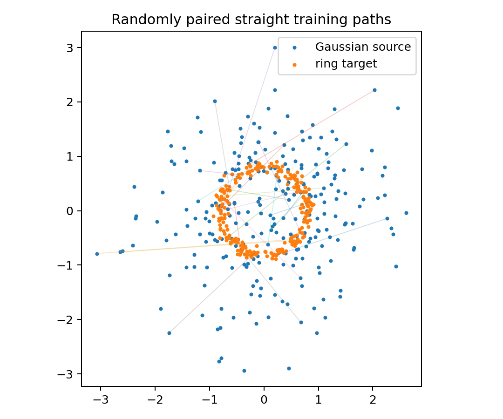
Model and training loss
The MLP takes a point's coordinates and its time, (xt, yt, t), and predicts a 2D velocity. It is trained by minimizing the mean squared error between that prediction and u = x₁ − x₀. At generation time the network never sees an endpoint; it only sees where a point is and when.
The loss (Figure 2) fell from 2.73 to about 1.5 and then fluctuated around that level instead of going to zero. With random pairing, many training lines with different directions pass through the same location at the same time, so the best the network can do is predict their average velocity. The remaining loss is the spread of those velocities around the average.
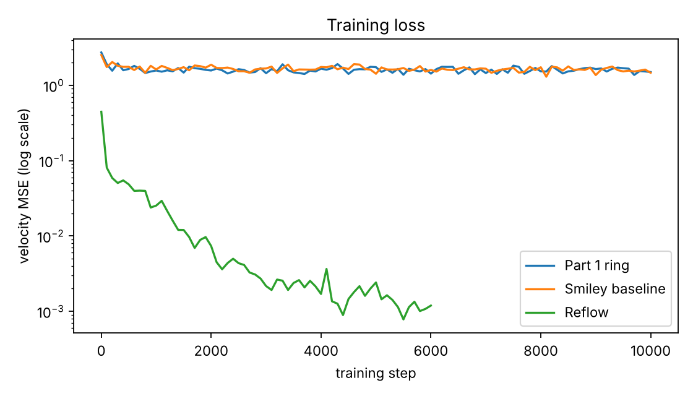
Generating new points
New samples start from fresh Gaussian points, without being told where they should end up. Each step moves every point a small distance along the predicted velocity (forward Euler, as given in the brief).
Figure 3 shows the generated cloud at t = 0, 0.2, 0.4, 0.6, 0.8 and 1.0 over 50 Euler steps. It first contracts into a dense disk, and only after t ≈ 0.8 does the center empty out to form the ring. The final samples (Figure 4) largely overlap independent target samples. A handful of points land outside the band, a few near the center.
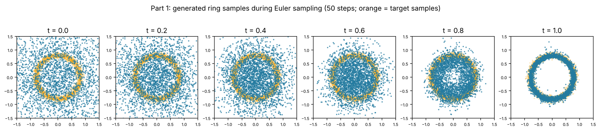
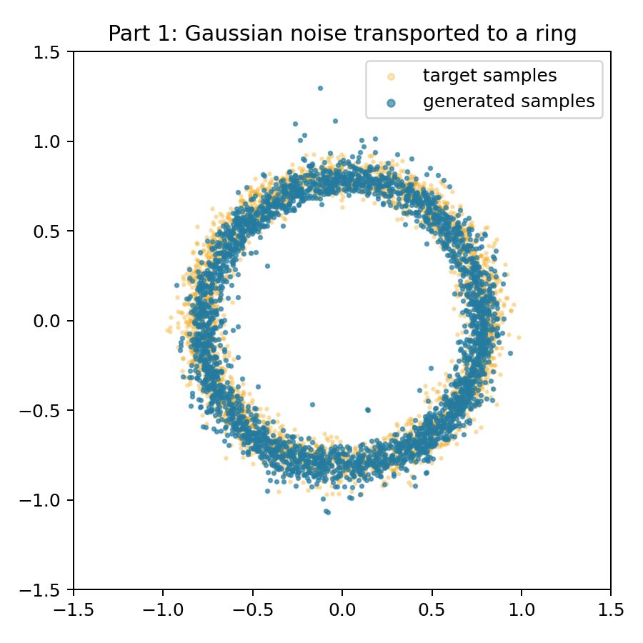
Figure 5 shows the ring model's learned field at t = 0, 0.5 and 0.9. At t = 0 the arrows point gently inward everywhere. By t = 0.9 the field pushes points onto the ring from both sides: points outside are pulled in, and points inside the ring are pushed outward, strongly near the center.
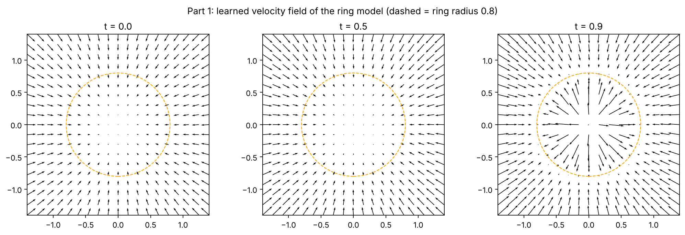
Learned trajectories vs. training paths
The straight lines in Figure 1 are only how training examples are built; the model never follows them. A generated particle follows the averaged field instead, so its path can bend. Figure 6 puts the two side by side. Training lines cross the whole plot in every direction, while learned trajectories run roughly toward the ring and many curve near the end. On the ring, mean path excess (trajectory length minus start-to-end distance, 50 steps) was 0.288, so straight training paths did not produce straight sampling trajectories. Part 3 measures the same thing on the smiley.
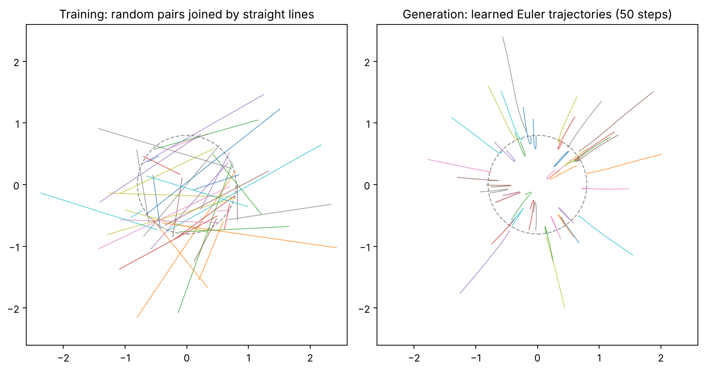
Part 2: A creative target and its animation
The smiley target
The creative target is a synthetic smiley line drawing: a circular outline, two small circular eyes and a parabolic mouth. Points were spread across the three parts in proportion to curve length, so longer strokes get more points. Each point was placed uniformly along its curve and then moved by isotropic Gaussian jitter with standard deviation 0.022. The intended distribution is therefore a set of thin, thickened strokes, not a filled face. The drawing was generated in code; no external image or licensed material was used.
The smiley baseline was trained with the same settings as the ring model (10,000 steps, 63.3 s).
Animating the learned transport
The animation below follows 1,500 Gaussian particles through every Euler step as they move into the smiley, then pauses on the final frame. Faint grey dots in the background are samples of the intended target, so you can see where the particles should end up. Figure 7 shows five representative frames from the start to the end of the animation.
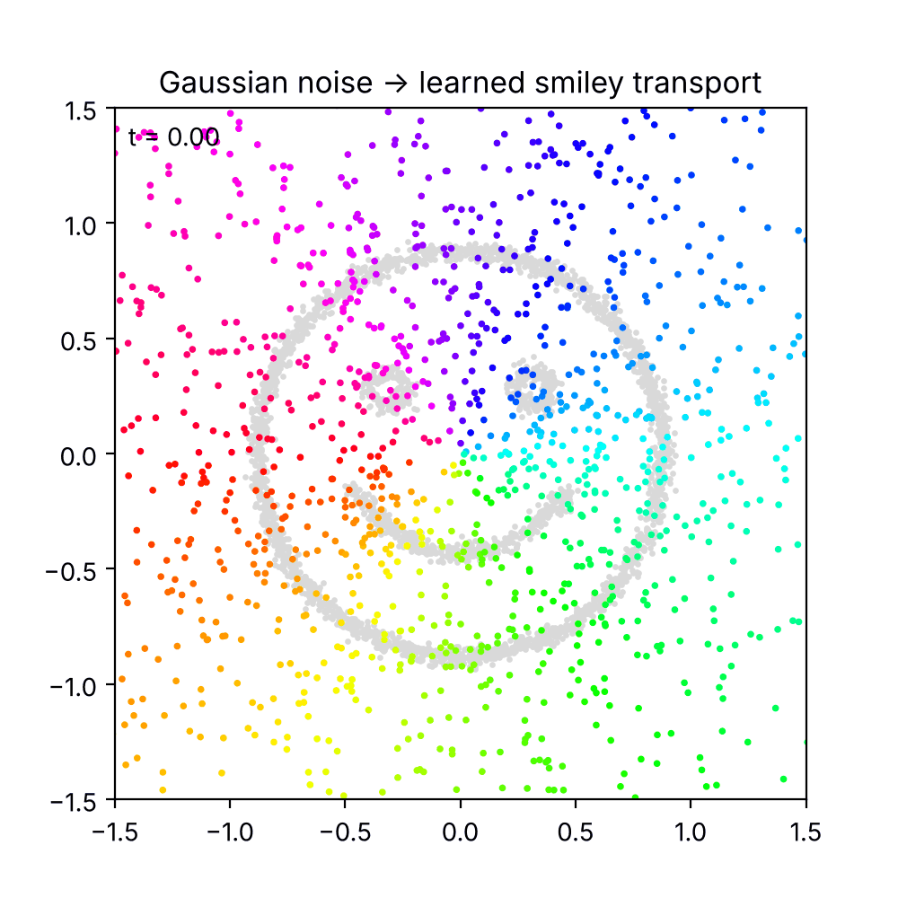
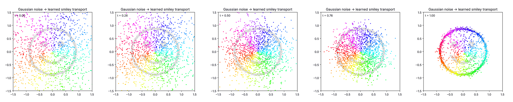
Each particle is colored by the angle of its Gaussian starting point around the origin, using a cyclic HSV colormap, and keeps that color for the whole animation. I only added the colors to visualize the GIF. They play no part in training; the network only predicts which way each point moves. Because the colors stay in coherent bands, the animation shows that particles roughly keep their starting direction: those starting upper-left end on the upper-left of the face, and so on. (I had an earlier version of colored particles by their index in the array, but felt like it looked random because the sources are random so it was replaced with this position-based scheme.)
Sampling trade-off
With the trained weights and the initial Gaussian samples fixed, I compared 1, 5, 10, 25 and 50 Euler steps on 3,000 points. Each step costs one network evaluation. Quality was measured as half the L1 distance between normalized 2D histograms of generated samples and 3,000 independent target samples (0 = identical, 1 = no overlap). The grid is 40 × 40 bins over [−1.5, 1.5]², with an extra one-bin-wide overflow ring around the edge so that points just outside the box still count. The same grid was used for every comparison. Points beyond the overflow ring would be dropped, but in every evaluation reported here no generated or target point left the plot area, so this had no effect.
In the table below, the baseline and reflow models start from the same 3,000 Gaussian points, so their scores can be compared directly. Sampling time excludes rendering.
| Euler steps | Network evaluations | Baseline score | Baseline time (s) | Reflow score | Reflow time (s) |
|---|---|---|---|---|---|
| 1 | 1 | 0.995 | 0.0075 | 0.414 | 0.0067 |
| 5 | 5 | 0.802 | 0.0308 | 0.374 | 0.0337 |
| 10 | 10 | 0.460 | 0.0621 | 0.371 | 0.0616 |
| 25 | 25 | 0.382 | 0.1587 | 0.372 | 0.1525 |
| 50 | 50 | 0.374 | 0.3196 | 0.375 | 0.3252 |
An earlier baseline-only run used a different set of 3,000 Gaussian starting points and gave 0.995, 0.796, 0.463, 0.383 and 0.368. The trend is the same; the small differences show how much the score moves with the choice of samples.
For the baseline, more steps steadily improved the score, from 0.995 at one step to 0.374 at 50. Most of the gain came before 25 steps. Going from 25 to 50 steps doubled the cost for an improvement of 0.008. Figure 8 shows why (top row). At one step, every point moves once along the field at t = 0, which points toward the middle, so the samples collapse into a small blob. At five steps the outer circle forms but is too small. By 25 steps the circle sits on the target.
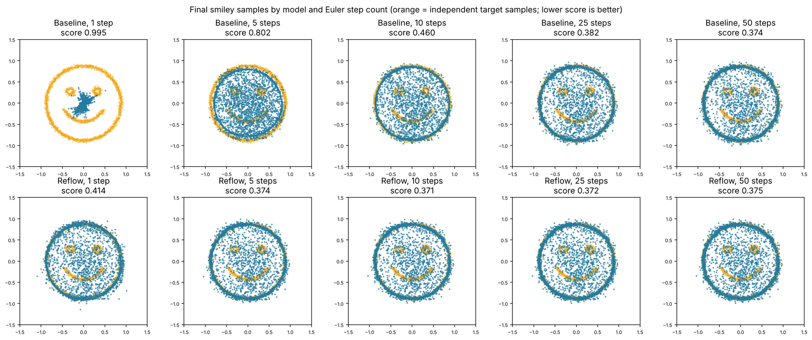
Some errors do not go away with more steps. At 50 steps, the outer circle matches the target closely, but the eyes and mouth are mostly missing and many points are scattered across the inside of the face. Since the score has leveled off by 25–50 steps, this remaining error comes from the learned field (or from how hard thin, small strokes are to learn), not from Euler discretization. The smiley model's velocity field (Figure 9) is consistent with this: at t = 0.9 its arrows point broadly toward the outline and show little of the eye and mouth structure.
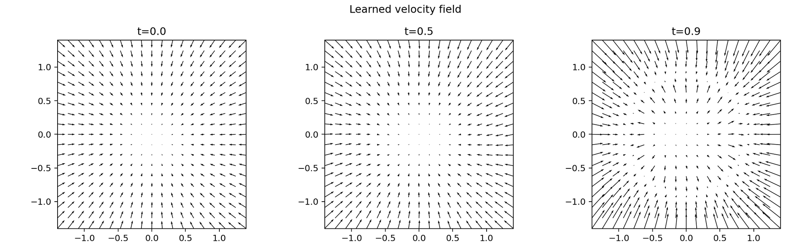
Part 3: Does reflow straighten the paths?
Hypothesis
My hypothesis was that retraining once on the baseline's own start–end pairs (reflow) would make the paths the dots travel much straighter. Because straight paths are easy to follow, reflow should then reach about the same result as the baseline with far fewer steps.
I did not expect reflow to beat the baseline's best score, because it copies the baseline's endpoints instead of learning the real smiley.
Reflow dataset and model
The trained smiley baseline was frozen. I drew 40,000 Gaussian source points, ran each through the baseline with 50 Euler steps, and saved each source together with its own generated endpoint. The pairs weren't shuffled, and the true smiley target was never used in place of a generated endpoint. A second model with the same architecture was then trained for 6,000 steps on straight interpolations between these saved pairs, using the same loss as before.
Both models were compared on 3,000 held-out Gaussian starting points, drawn from a separate random stream (seed 2030) from the 40,000 reflow sources (seed 2032), using identical step counts and the same quality score as Part 2.
Results
Straightness was measured as mean path excess: the length of each trajectory minus the straight-line distance from its start to its end, averaged over particles, on a common 50-step time grid. A perfectly straight path has excess 0.
| Model | Mean trajectory length | Mean start-to-end distance | Mean path excess |
|---|---|---|---|
| Baseline | 0.7962 | 0.4864 | 0.3097 |
| Reflow | 0.4840 | 0.4837 | 0.00031 |
Reflow paths are almost perfectly straight: excess fell by a factor of about 1,000 (Figure 10). The two models move particles a similar overall distance (0.486 vs. 0.484); the baseline just takes a much longer route to get there.
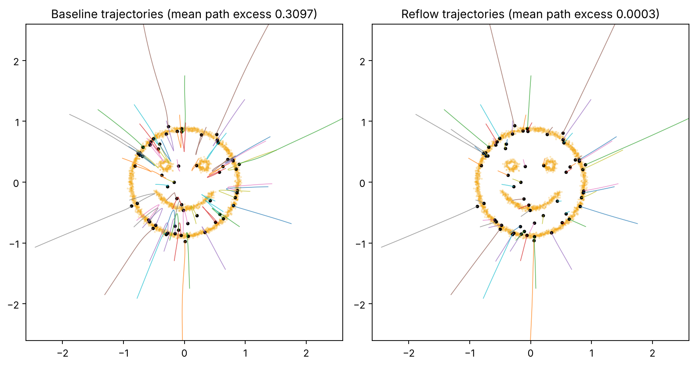
Distribution quality and sampling time are in the Part 2 table and the bottom row of Figure 8. With 5 steps, reflow scored 0.374, the same as the baseline at 50 steps, with 10× fewer network evaluations (0.034 s vs. 0.320 s). A single reflow step scored 0.414, better than the baseline at 10 steps in this seed, but that did not hold in every seed (below). From 5 steps on, reflow stayed between 0.371 and 0.375 and never beat the baseline's best score.
The reflow loss fell from 0.446 to about 0.001, whereas the baseline loss stayed around 1.5 (Figure 2). Each reflow source has exactly one endpoint, so the training lines rarely conflict and the network can fit them almost exactly. That is why the learned field produces straight paths.
Repeating with two more seeds
I repeated the smiley baseline and reflow experiment with seeds 2027 and 2028, with identical settings. These runs were done on a different machine (PyTorch 2.15), so only scores and straightness are reported, not runtimes.
| Seed | Baseline, 5 steps | Baseline, 50 steps | Reflow, 1 step | Reflow, 5 steps | Baseline path excess | Reflow path excess |
|---|---|---|---|---|---|---|
| 2026 (main) | 0.802 | 0.374 | 0.414 | 0.374 | 0.310 | 0.00031 |
| 2027 | 0.762 | 0.460 | 0.476 | 0.444 | 0.320 | 0.00018 |
| 2028 | 0.775 | 0.398 | 0.541 | 0.398 | 0.301 | 0.00008 |
| Mean | 0.780 | 0.411 | 0.477 | 0.405 | 0.310 | 0.00019 |
The two main findings held in all three seeds. Reflow cut path excess from about 0.31 to under 0.001, and 5-step reflow matched or slightly beat 50-step baseline (difference −0.017 to +0.001). The one-step result did not hold: in seed 2028, one reflow step (0.541) was clearly worse than 10 baseline steps (0.454). The baseline's own 50-step score varied from 0.374 to 0.460 across seeds, which is much larger than any difference between the two models within a seed.
One-time cost of reflow
These costs are separate from the inference times above:
- Generating the 40,000 pairs: 7.0 s
- Training the reflow model: 36.3 s (6,000 steps)
- Total: 43.3 s, on top of the 63.3 s used to train the baseline
Switching from 50-step baseline sampling to 5-step reflow sampling saves about 0.29 s per batch of samples the size used here. The one-time cost would only pay off after roughly 150 such batches. For a single demo, reflow costs more time overall; its benefit is for repeated or real-time sampling.
What the evidence supports
The results support the hypothesis, consistently across three seeds. Reflow made the trajectories nearly straight and reached the baseline's 50-step quality at 5 steps. Straighter paths did not make the samples more accurate: reflow leveled off at the baseline's best score and inherited the same failure, with the eyes and mouth largely missing (Figure 8, bottom row).
Alternative explanations:
- An easier learning problem, not just straighter paths. Reflow learns a fixed, one-to-one mapping from sources to the baseline's endpoints, which is easier than the original randomly paired problem. Straightness and fast sampling come from the same cause, so this experiment cannot separate them.
- Extra training. The reflow model received 6,000 extra steps of training on top of the baseline. I don't make any claim about training efficiency, so I didn't need to compare it against a baseline trained for the same extra steps. I'd only need that comparison to argue that reflow is a better use of the same training time.
- Noise in the score. Differences of a few thousandths between the models are far smaller than the 0.374–0.460 spread of the baseline across seeds, so they should not be treated as real differences.
- Choice of score. The histogram grid is coarse relative to the thin strokes, so it may not fully capture how badly the eyes and mouth are missed. Both models are scored on the same grid, so the comparison between them is fair, even if the absolute numbers understate the error.
Limitations
- Few seeds. The Part 3 findings were checked on three seeds; Parts 1 and 2 used one. Three seeds show the main findings are not a one-off, but are too few to estimate variability precisely, and the extra seeds ran on a different machine and PyTorch version.
- One synthetic target. The stroke thickness (σ = 0.022) and the rule for dividing points between the outline, eyes and mouth define what counts as correct. A thicker or differently weighted drawing could give different results.
- The quality score. The histogram score depends on the grid resolution and range, and it compares densities rather than shapes. It does not directly measure whether the eyes and mouth are recognizable.
- Timing. Runtimes depend on hardware and software and come from a single measurement each.
- Inherited errors. Reflow learns from baseline-generated endpoints, so it cannot fix the baseline's mistakes on the eyes and mouth.
Final takeaway
A small flow model gets the big shape right but misses fine detail, and neither more sampling steps nor reflow fixes that. Reflow is worth it for speed, not accuracy.
Code
The code is submitted separately on Blackboard and is not published here. It is organized as follows:
| File | What it does |
|---|---|
part_1.py | Part 1: trains the ring model and makes Figures 1, 3, 4, 5 and 6 |
part_2.py | Part 2: trains the smiley baseline, runs the step-count comparison, and makes the animation and Figures 7 and 9 |
part_3.py | Part 3: builds the reflow pairs, trains the reflow model, runs the comparison and extra seeds, and makes Figures 2, 8 and 10 |
utils.py | Shared code: target samplers, the network, training, Euler sampling, the quality score and plotting |